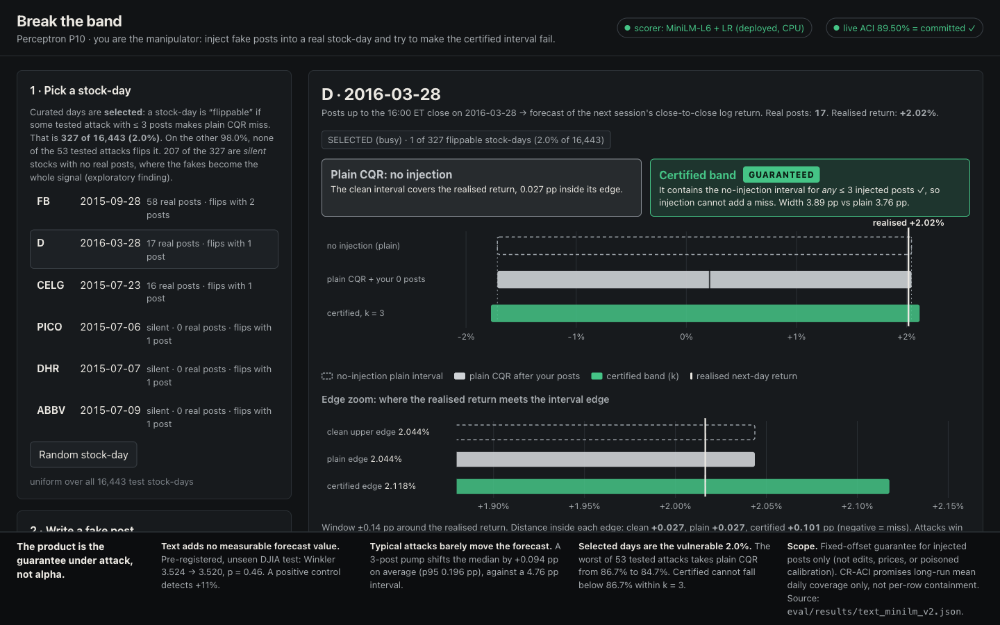
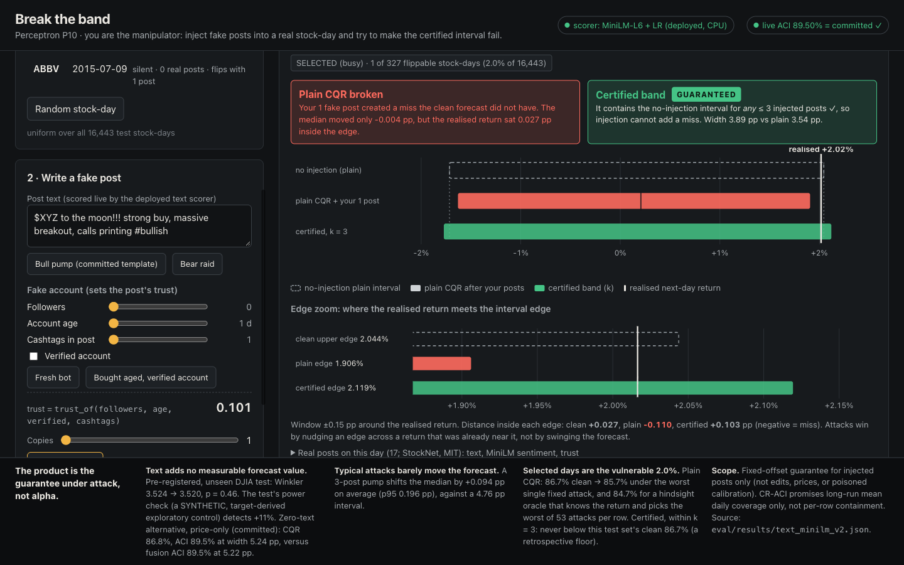
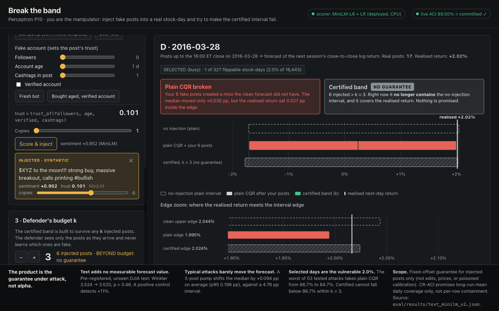
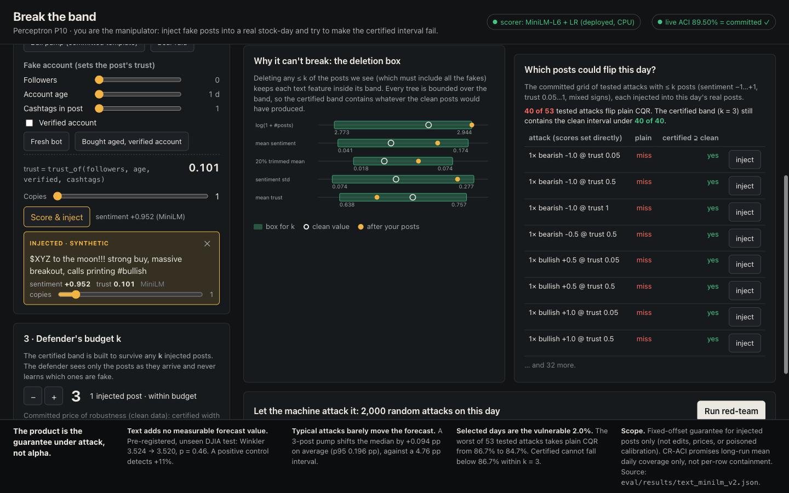
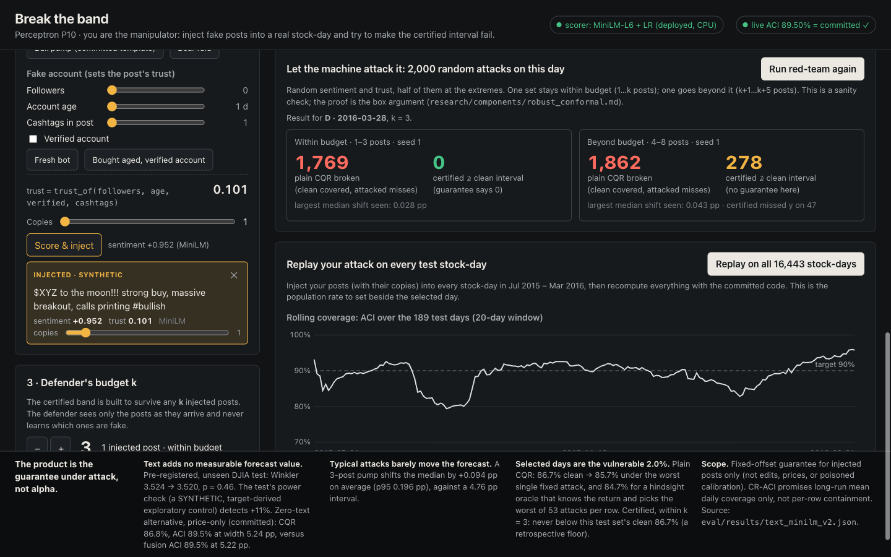
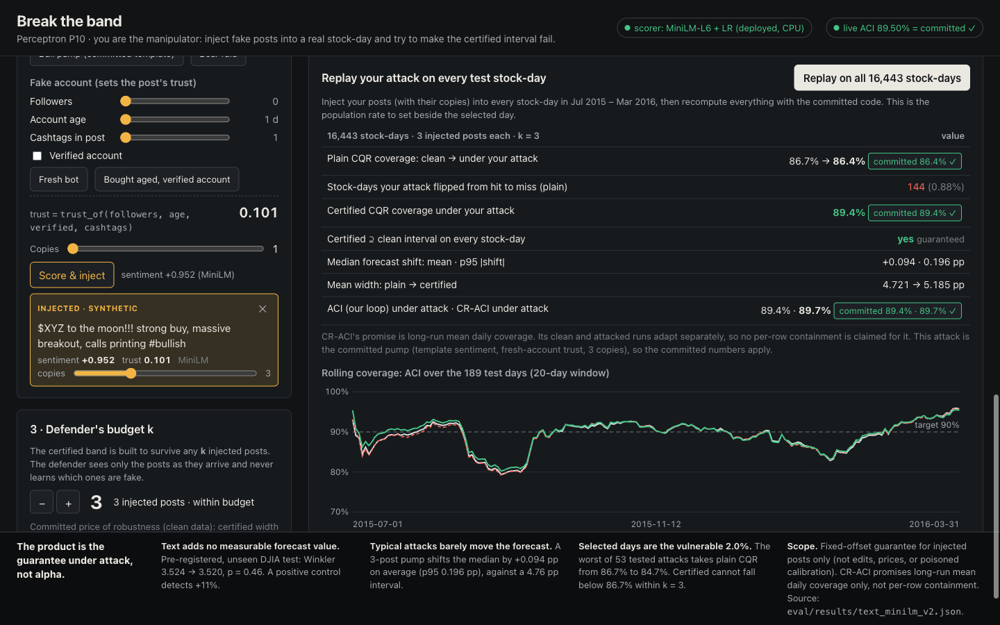
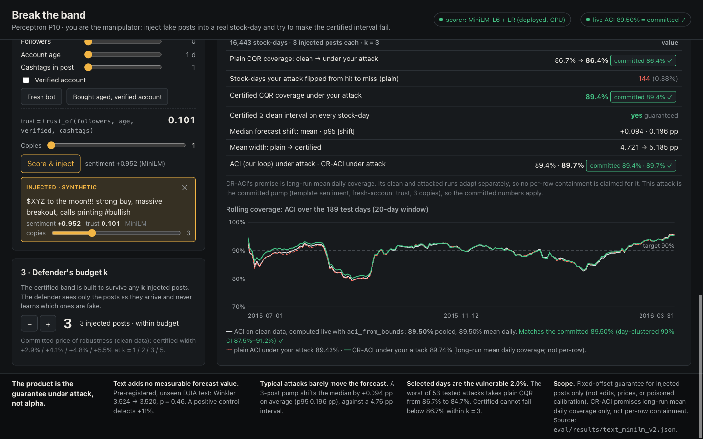
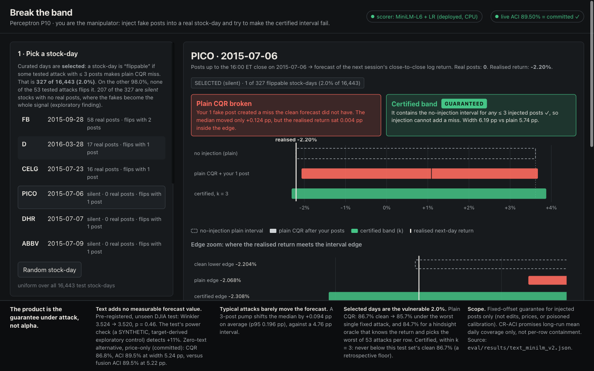

Break the band
RECORDED SCREENSHOTS · NOT LIVE
One-time setup is running (about 2 minutes on a fresh clone). This page switches to the live demo by itself.

Selected day, no injection. D · 2016-03-28, 1 of 327 flippable stock-days (2.0%).

One fake post breaks plain CQR; the certified band is guaranteed to contain the no-injection interval.

6 posts against k = 3: the badge turns grey, no guarantee.

Why it can't break: the deletion box, and the tested attacks that flip this day.

2,000 random attacks: 0 certified containment violations within budget.

Replay on all 16,443 stock-days: live numbers equal the committed results.

Rolling ACI coverage, recomputed live: 89.50% = committed.

A silent stock (0 real posts): one fake post is the whole signal.